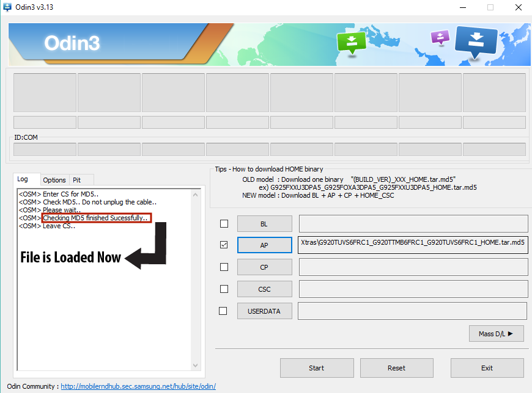

How To Flash Android Phone

If you want to use your old Android Phone with a new carrier or if you have rooted your Android Phone and you want to upgrade to the latest Android Version but you are not getting official software updates from Samsung, you will need to know how to flash Android Phone. Flashing an Android phone isn't much difficult but before flashing your phone, you should know what is a ROM and what is flashing.
What is Android ROM?
ROM stands for Read Only Memory. A ROM is basically a firmware which is installed on every Android Phone by default. An Android ROM is completely replaceable therefore users can install new ROMs to change Android appearance and behavior. The Stock ROM comes installed on the Android Phone or tablet whereas a Custom ROM comes from a third party. The custom ROM is a uniquely altered OS(Operating System) such as MIUI, Cyanogen or AOKP. A custom ROM also could be a stock version which could be made available for older Android devices.
What is flashing a ROM?
Flashing a ROM to your Android Phone is basically installing a new firmware in your Android Phone. People flash new ROMs to their Android Phones to get a different version of the Android OS(Operating System) for an even better Android experience. There are many software's like SP flash tool and Odin to flash a ROM to your Android Phone. We will use Odin to flash the Android Phone. You can either flash a Stock ROM to your Android Phone or you can flash a Custom ROM to your Android Phone, now it's up to you. In this article, we will discuss how to flash a Stock ROM to your Android Phone because the process of flashing a Custom ROM to your Android Phone is different but in future, we will also upload an article on how to flash a Custom ROM to your Android Phone.
Requirements to flash Android Phone
-
Stock ROM (Download the Stock ROM for your Android Phone from any of the websites given below):
‣ Sam Mobile
‣ Updato
‣ Firmware.Mobi - Odin.
- Make Complete Backup of your Android Data. If you don't know how to make a complete backup of your android data then click here.
- Make sure your Android Phone is at least 40-50 percent charged.
How To flash Android Phone From PC With USB Cable
Here's how to flash Android Phone From PC With USB Cable:
1. Enable USB Debugging before flashing your Android Phone
Go to Settings > Developer Options and enable USB Debugging. If Developer Options isn't visible then go to Settings > About and tap the Build number seven times. This will enable Developer Options from where you can enable USB Debugging.

2. Reboot into Download Mode
Reboot your phone into Download Mode by pressing Home, Volume down, and Power button at the same time and hold them.

Press and hold the keys until a warning screen appears and then press the volume up button to continue.

3. Connect to Computer
Connect your phone to your Computer/Laptop. If it doesn't automatically connect then download and install Android USB Driver in your computer.
4. Open Odin and Flash Android Phone
Open Odin as Admin by right-clicking it.

Now, Click on AP/PDA and select the Stock ROM file that you have downloaded. (Unzip the zip file that you have downloaded and select .md5 file).

Wait for approximately 2 mins until it gets loaded. Keep an eye on the log (at the left side) so that you will come to know when it's loaded.

Click on the Start button and wait until all the process gets done and then PASS appears on the screen.

Now, your Android Phone will automatically restart.
That is all. You have succeeded in learning how to flash Android Phone. If you have any questions or queries regarding this article, feel free to ask us in the comments section. You can also contact us on Facebook.